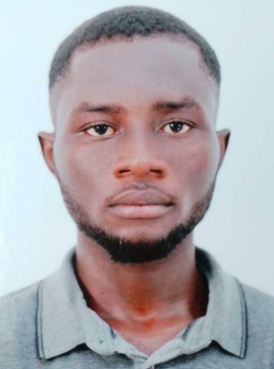

Alfred Tawiah
Electrical Engineer

Summary
I am a hardworking and Dedicated individual who dreams of becoming one of the best elctrical engineers in the world
Education
-
Electrical Engineering
- Faculty of Science and Technology-Fes
- Master's Degree
- 2023-2028
-
Diplome D'Etude en Langue Francais
- Bonfield Education Advisory
- Level-b2
- March-September(2023)
-
Electricals
- Bosome Senior High Technical School
- WASSCE
- 2018-2021
Work Experience
-
Internship--Office Nationale De l'Eau et d'Electriciteb>
June 2028 -August 2035
- Helped in Installing New Transformers
- Helped in Controlling and Distributing Electricity Effectively
- Assisted in Building Circuits
-
Junior Engineer - TransElectric Company Limited
August 2035 - present
- Designed New Circuits
- Assisted in Building Cassidy Dam
Skills
- Good Communication Skills ⭐️⭐️⭐️⭐️⭐️
- Inovative⭐️⭐️⭐️⭐️⭐️
- Progrmming Skills :HTML,CSS, C++,C,PYTHON,JAVASCRIPT
Awards and Certificates
- Best Graduating Student- FST FES(2028)
- Employee of the Year-TransElectric Company LMT(2030)
Other
©Alfred Tawiah. All rights reserved.